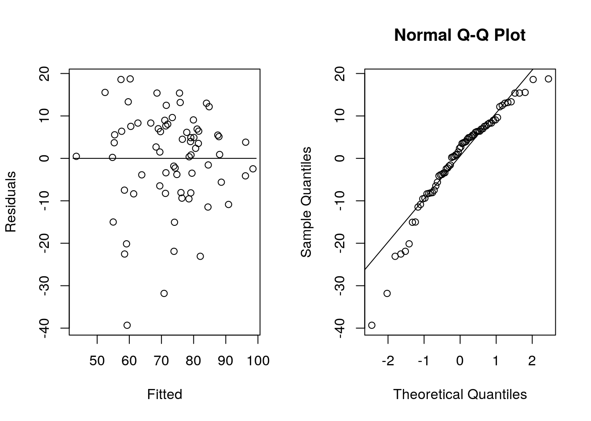

Chapter 5 Statistical Analysis
There are a huge variety of statistical tests built in to R for analyzing data. In many cases the same function will perform several different tests and confidence intervals, and produce a large amount of output. We provide examples of many of these functions below, including some that are part of other packages, and others that are custom written functions.
library(tidyverse)Course Data
Most of the examples of the statistical methods in this section are carried out using the data set CourseData. The data is a stratified sample of 70 students from a large section course. The strata were based on the college the students belonged to (AS = Arts & Sciences, PM = Professional Management, MC = Mass Communications, and NU=Nursing) and their year in school (ranging from 1st to 3rd based on credit hours, and limited based on expectation of having at least 10 students from that college at that grade level). The response variables are their Hmwk = Homework Average and E1 to E3 = their grades on the first three exams.
If the data is read in using read_table() from the readr package and called students, then table(students[, 1:2]) verifies the count of the students in each grouping.
students <- readr::read_table("data/CourseData.txt")[, -1]
## verify grouping
# students %>% dplyr::count(College, Year)
table(students[, 1:2])## Year
## College 1 2 3
## AS 10 10 10
## MC 10 10 0
## NU 10 0 0
## PM 10 0 0attach(students) allows you to reference the variables simply by College, Year, Hmwk, E1, E2, and E3.
attach(students)If you have attached the dataset, some useful subsets of the data can be created to give the different types of scores by group. For example:
## E1 for 1st year nursing students
E1.1NU <- E1[(College == "NU") & (Year == 1)]
## E1 for 1st year arts & sciences students
E1.1AS <- E1[(College == "AS") & (Year == 1)]
## E3 for 1st year nursing students
E3.1NU <- E3[(College == "NU") & (Year == 1)]
## Put Year and College together
grp <- as.factor(paste0(Year, College))
students <- students %>%
mutate(grp = as.factor(paste0(Year, College)))More detail on choosing subsets like this are covered in the upcoming section on Manipulating Data.
There are a variety of graphical tools we could use to get an overview of the data set, and we will see a number of them in the upcoming section on Graphics. Two of note include:
GGally::ggpairs(students[, 3:6])
ggplot(students, aes(College, E1)) +
geom_boxplot(aes(fill = stage(College, after_scale = alpha(fill, 0.8))), show.legend = FALSE) +
facet_grid(~Year, scales = "free", space = "free_x", labeller = labeller(Year = label_both))
The coverage of the different methods below is divided into several sections:
- One-sample t-test
- Other Basic Hypothesis Tests
- One-way ANOVA and Multiple Comparisons
- Regression, Factorial ANOVA, and ANCOVA
- Other Methods
Each of them assumes you have created and attached the data frame students and created the objects E1.1NU, E1.1AS, E3.1NU, and grp.
5.1 One-sample t-test and interval
Test the null hypothesis that the mean score on E1 for 1st year nursing students is greater than the historical exam average of 75.

students %>%
dplyr::filter(College == "NU") %>%
infer::t_test(response = E1, mu = 75, alternative = "greater") %>%
pander::pander()| statistic | t_df | p_value | alternative | estimate | lower_ci | upper_ci |
|---|---|---|---|---|---|---|
| 1.906 | 9 | 0.04452 | greater | 82.1 | 75.27 | Inf |
Note that this produces a one-sided confidence bound because of the alternative selected. To get the standard 95% interval in the solutions, run it without the alternative = "greater" part (you don’t need to specify "two-sided" because that is the default setting). The other option is "less".
Using help(t_test) we can also see that the default null hypothesis is mu = 0, the function can perform the two-sample tests, and conf_level controls the confidence level for the confidence intervals.
In some cases it is useful to be able to retrieve only part of the output from a test. For example, a simulation study might only want to use the p-values. Because infer::t_test() returns a data frame, the values can easily be extracted.
students %>%
dplyr::filter(College == "NU") %>%
infer::t_test(response = E1, mu = 75, alternative = "greater") %>%
pull(p_value)## [1] 0.04451704If we save the output as an object, the values can be accessed using the $. For example:
t.out <- students %>%
dplyr::filter(College == "NU") %>%
infer::t_test(response = E1, mu = 75, alternative = "greater")
t.out$p_value## [1] 0.044517045.2 Other Basic Hypothesis Tests
5.2.1 Two-sample t-test and interval
Test the null hypothesis that the mean on E1 for 1st year students from arts and sciences is less than the mean for 1st year students from nursing.

students %>%
dplyr::filter(College %in% c("NU", "AS"), Year == 1) %>%
infer::t_test(formula = E1 ~ College,
order = c("AS", "NU"),
alternative = "less",
var.equal = TRUE) %>%
pander::pander()| statistic | t_df | p_value | alternative | estimate | lower_ci | upper_ci |
|---|---|---|---|---|---|---|
| -1.385 | 18 | 0.09152 | less | -9.6 | -Inf | 2.421 |
var.equal = TRUE specifies use of the equal variances assumption. The default is variances not equal (or use var.equal = FALSE). Again, the confidence interval gotten using this code is the one-sided confidence bound. Use two-sided to get the confidence interval.
5.2.2 Paired t-test and confidence interval
Test that the mean for E3 is greater than the mean of E1 for first year nursing students.

students %>%
dplyr::filter(College == "NU") %>%
mutate(Change = E3 - E1) %>%
infer::t_test(response = Change, alternative = "greater") %>%
pander::pander()| statistic | t_df | p_value | alternative | estimate | lower_ci | upper_ci |
|---|---|---|---|---|---|---|
| -1.962 | 9 | 0.9593 | greater | -6.6 | -12.77 | Inf |
Another option for conducting a paired t-test is to use the t.test() function with paired = T. The output, of course, is the same as conducting the one-sample t test on the differences.
## The correct paired test
t.test(E3.1NU, E1.1NU, alternative = "greater", paired = T)##
## Paired t-test
##
## data: E3.1NU and E1.1NU
## t = -1.962, df = 9, p-value = 0.9593
## alternative hypothesis: true mean difference is greater than 0
## 95 percent confidence interval:
## -12.76634 Inf
## sample estimates:
## mean difference
## -6.65.2.3 Chi-square test and interval for one variance
Test whether the standard deviation of E1 is greater than 10 for the first year nursing students.
R doesn’t have this test built in (which isn’t that horrible since we should probably never do it… but it does make it odd that they have the F-test for two variances then.) In any case its pretty easy to write a function to do it. To analyze the data, cut and paste the function in, and then run it on your data. Or, it can be read in using source("code/TWRfns.txt").
chisquare.var <- function(y, sigma2 = 1, alpha = 0.05) {
n <- length(y)
chisquare <- (n - 1) * var(y) / sigma2
pval.low <- pchisq(chisquare, df = n - 1)
pval.hi <- 1 - pchisq(chisquare, df = n - 1)
pval.not <- 2 * min(pval.low, pval.hi)
cilow <- (n - 1) * var(y) / qchisq(1 - alpha / 2, df = n - 1)
cihi <- (n - 1) * var(y) / qchisq(alpha / 2, df = n - 1)
list(
chisquare = chisquare, pval.for.less.than = pval.low,
pval.for.greater.than = pval.hi, pval.for.not.equal = pval.not,
ci.for.variance = c(cilow, cihi), ci.for.sd = c(sqrt(cilow), sqrt(cihi))
)
}chisquare.var(E1.1NU, sigma2 = 10^2)## $chisquare
## [1] 12.489
##
## $pval.for.less.than
## [1] 0.8128762
##
## $pval.for.greater.than
## [1] 0.1871238
##
## $pval.for.not.equal
## [1] 0.3742476
##
## $ci.for.variance
## [1] 65.65291 462.48884
##
## $ci.for.sd
## [1] 8.102648 21.505554Note that the confidence intervals here are sub-optimal in terms of length because they place an equal amount of area in each end.
5.2.4 F test for two variances
Test whether the variance of E1 for the first year nursing students is equal to the variance of E1 for the first year arts and sciences students.

var.test(E1.1NU, E1.1AS)##
## F test to compare two variances
##
## data: E1.1NU and E1.1AS
## F = 0.40595, num df = 9, denom df = 9, p-value = 0.1954
## alternative hypothesis: true ratio of variances is not equal to 1
## 95 percent confidence interval:
## 0.1008318 1.6343456
## sample estimates:
## ratio of variances
## 0.40594835.2.5 Two-sample Modified Levene’s Test
Test of whether the variance of E1 for the first year nursing students is equal to the variance of E1 for the first year arts and sciences students.
R doesn’t contain a built in function for the Modified Levene’s test, but it can be carried out simply by running the two sample t.test on the right values.
t.test(abs(E1.1NU - median(E1.1NU)), abs(E1.1AS - median(E1.1AS)), var.equal = T)##
## Two Sample t-test
##
## data: abs(E1.1NU - median(E1.1NU)) and abs(E1.1AS - median(E1.1AS))
## t = -1.3395, df = 18, p-value = 0.1971
## alternative hypothesis: true difference in means is not equal to 0
## 95 percent confidence interval:
## -14.382926 3.182926
## sample estimates:
## mean of x mean of y
## 8.9 14.5Of course the means this is testing about are the means of the absolute deviation from the median. If that measure of spread is different between the two populations, then the variances should be different as well.
The packages car and lawstat have built in modified Levene’s test functions, but they require having a response variable and a group variable (like in ANOVA). An easy function for the two sample case would be:
levene2 <- function(data1, data2) {
print("p-value for testing null hypothesis of equal variances")
t.test(abs(data1 - median(data1)), abs(data2 - median(data2)), var.equal = T)$p.value
}
levene2(E1.1NU, E1.1AS)## [1] "p-value for testing null hypothesis of equal variances"## [1] 0.19706085.3 One-way ANOVA and Multiple Comparisons
5.3.1 One-way ANOVA
Test whether the means of E1 are equal for the seven populations of students.
The basic function for conducting an ANOVA (or any linear model) is lm():
lm(E1 ~ grp)##
## Call:
## lm(formula = E1 ~ grp)
##
## Coefficients:
## (Intercept) grp1MC grp1NU grp1PM grp2AS grp2MC
## 72.5 3.8 9.6 5.6 -1.8 3.3
## grp3AS
## 6.6The ~ indicates that you are specifying a model equation. The variable to the left of the tilde is the response variable, and the variable to the right is the predictor variable. (In multiple regression and more complicated ANOVA there can be multiple predictor variables).
Unfortunately the output from lm() seems pretty meager - it is just the estimates of the parameters in the model equation. Using:
attributes(lm(E1 ~ grp))## $names
## [1] "coefficients" "residuals" "effects" "rank"
## [5] "fitted.values" "assign" "qr" "df.residual"
## [9] "contrasts" "xlevels" "call" "terms"
## [13] "model"
##
## $class
## [1] "lm"shows that there is a lot more behind the scenes. The functions anova(), summary(), broom::tidy(), broom::glance(), and broom::augment() can be used to extract much of this information.
E1fit <- lm(E1 ~ grp)
anova(E1fit)## Analysis of Variance Table
##
## Response: E1
## Df Sum Sq Mean Sq F value Pr(>F)
## grp 6 907.3 151.22 1.1563 0.341
## Residuals 63 8239.0 130.78summary(E1fit)##
## Call:
## lm(formula = E1 ~ grp)
##
## Residuals:
## Min 1Q Median 3Q Max
## -27.50 -6.80 0.10 6.45 23.50
##
## Coefficients:
## Estimate Std. Error t value Pr(>|t|)
## (Intercept) 72.500 3.616 20.048 <2e-16 ***
## grp1MC 3.800 5.114 0.743 0.4602
## grp1NU 9.600 5.114 1.877 0.0651 .
## grp1PM 5.600 5.114 1.095 0.2777
## grp2AS -1.800 5.114 -0.352 0.7260
## grp2MC 3.300 5.114 0.645 0.5211
## grp3AS 6.600 5.114 1.291 0.2016
## ---
## Signif. codes: 0 '***' 0.001 '**' 0.01 '*' 0.05 '.' 0.1 ' ' 1
##
## Residual standard error: 11.44 on 63 degrees of freedom
## Multiple R-squared: 0.0992, Adjusted R-squared: 0.01341
## F-statistic: 1.156 on 6 and 63 DF, p-value: 0.341broom::tidy(E1fit)## # A tibble: 7 × 5
## term estimate std.error statistic p.value
## <chr> <dbl> <dbl> <dbl> <dbl>
## 1 (Intercept) 72.5 3.62 20.0 4.87e-29
## 2 grp1MC 3.8 5.11 0.743 4.60e- 1
## 3 grp1NU 9.6 5.11 1.88 6.51e- 2
## 4 grp1PM 5.60 5.11 1.09 2.78e- 1
## 5 grp2AS -1.80 5.11 -0.352 7.26e- 1
## 6 grp2MC 3.30 5.11 0.645 5.21e- 1
## 7 grp3AS 6.60 5.11 1.29 2.02e- 1broom::glance(E1fit)## # A tibble: 1 × 12
## r.squ…¹ adj.r…² sigma stati…³ p.value df logLik AIC BIC devia…⁴ df.re…⁵
## <dbl> <dbl> <dbl> <dbl> <dbl> <dbl> <dbl> <dbl> <dbl> <dbl> <int>
## 1 0.0992 0.0134 11.4 1.16 0.341 6 -266. 548. 566. 8239 63
## # … with 1 more variable: nobs <int>, and abbreviated variable names
## # ¹r.squared, ²adj.r.squared, ³statistic, ⁴deviance, ⁵df.residualbroom::augment(E1fit)## # A tibble: 70 × 8
## E1 grp .fitted .resid .hat .sigma .cooksd .std.resid
## <dbl> <fct> <dbl> <dbl> <dbl> <dbl> <dbl> <dbl>
## 1 79 1NU 82.1 -3.10 0.100 11.5 0.00130 -0.286
## 2 60 1NU 82.1 -22.1 0.100 11.1 0.0659 -2.04
## 3 83 1NU 82.1 0.900 0.100 11.5 0.000109 0.0830
## 4 91 1NU 82.1 8.90 0.1 11.5 0.0107 0.820
## 5 68 1NU 82.1 -14.1 0.1 11.4 0.0268 -1.30
## 6 89 1NU 82.1 6.90 0.1 11.5 0.00642 0.636
## 7 76 1NU 82.1 -6.10 0.1 11.5 0.00502 -0.562
## 8 92 1NU 82.1 9.90 0.1 11.5 0.0132 0.913
## 9 84 1NU 82.1 1.90 0.1 11.5 0.000487 0.175
## 10 99 1NU 82.1 16.9 0.1 11.3 0.0385 1.56
## # … with 60 more rows# par(mfrow = c(1, 2))
# plot(E1fit, 1)
# plot(E1fit, 2)
# par(mfrow = c(1, 1))
E1fit_resids <- broom::augment(E1fit) %>%
ggplot(aes(x = .fitted, y = .resid)) +
geom_hline(yintercept = 0, color = "#3273c2", size = 1) +
geom_point(size = 2, alpha = 0.7) + #shape = 1) +
labs(title = "Residual Plot",
x = "Predicted Values",
y = "Residuals")
# devtools::install_github("aloy/qqplotr")
E1fit_qqplot <- broom::augment(E1fit) %>%
ggplot(aes(sample = .std.resid)) +
qqplotr::geom_qq_band(fill = "#363636", alpha = 0.15) +
stat_qq_line(color = "#3273c2", size = 1) +
stat_qq(size = 1.5, alpha = .7) +
labs(x = "Theoretical Quantiles",
y = "Standardized residuals",
title = "Normal Q-Q Plot")
library(patchwork)
E1fit_resids + E1fit_qqplot The first is the residual vs. predicted plot, and the second is the qq-plot of the residuals.
The first is the residual vs. predicted plot, and the second is the qq-plot of the residuals.
In some cases it is necessary to enter the data on your own, and then it is important to be sure that the group variable is a “factor”. For example, imagine that you had the vector E1 entered, but did not have the vector of group memberships yet. We know however that the test scores go with different groups in sets of 10 (observations 1-10 are 1NU, 11-20 are 1PM, etc…). One way we could do a set of labels is:
grplabs <- c(
rep(1, 10), rep(2, 10), rep(3, 10),
rep(4, 10), rep(5, 10), rep(6, 10), rep(7, 10)
)
grplabs## [1] 1 1 1 1 1 1 1 1 1 1 2 2 2 2 2 2 2 2 2 2 3 3 3 3 3 3 3 3 3 3 4 4 4 4 4 4 4 4
## [39] 4 4 5 5 5 5 5 5 5 5 5 5 6 6 6 6 6 6 6 6 6 6 7 7 7 7 7 7 7 7 7 7The rep repeats the value in the first spot the number of times indicated in the second. Trying
lm(E1 ~ grplabs)##
## Call:
## lm(formula = E1 ~ grplabs)
##
## Coefficients:
## (Intercept) grplabs
## 78.6429 -0.5679gives a very different result from before though. Because the predictor variable is numeric, by default it attempted to do a regression instead of an ANOVA. Using:
grplabs <- as.factor(grplabs)
lm(E1 ~ grplabs)##
## Call:
## lm(formula = E1 ~ grplabs)
##
## Coefficients:
## (Intercept) grplabs2 grplabs3 grplabs4 grplabs5 grplabs6
## 82.1 -4.0 -9.6 -11.4 -3.0 -5.8
## grplabs7
## -6.3solves that problem. If we had entered the names of the various groups in quotation marks, instead of 1-7, then the grplabs would have been characters instead of numeric, and it would have worked without being factors (although some other functions might give a warning message).
5.3.2 Modified Levene Test
Test whether the variances of E2 are equal for the seven populations of students.
The modified Levene test is available in the package car, so if that package has been downloaded it could be conducted using.
library(car)
leveneTest(E1, grp)## Levene's Test for Homogeneity of Variance (center = median)
## Df F value Pr(>F)
## group 6 1.9679 0.08363 .
## 63
## ---
## Signif. codes: 0 '***' 0.001 '**' 0.01 '*' 0.05 '.' 0.1 ' ' 15.3.3 All Pairwise Comparisons - Tukey’s HSD and Scheffe
Simultaneously construct confidence intervals around the differences in the mean of E2 between each pair of groups, or test the hypotheses of equality of the mean E2 score between each pair of groups.
R has a built in function TukeyHSD that will construct the intervals in the balanced case, and includes an adjustment for the slightly unbalanced cases.
TukeyHSD(aov(E2 ~ grp))## Tukey multiple comparisons of means
## 95% family-wise confidence level
##
## Fit: aov(formula = E2 ~ grp)
##
## $grp
## diff lwr upr p adj
## 1MC-1AS 16.7 -3.8321876 37.232188 0.1853530
## 1NU-1AS 23.2 2.6678124 43.732188 0.0169654
## 1PM-1AS 6.5 -14.0321876 27.032188 0.9597899
## 2AS-1AS 0.8 -19.7321876 21.332188 0.9999997
## 2MC-1AS 19.8 -0.7321876 40.332188 0.0657667
## 3AS-1AS 14.9 -5.6321876 35.432188 0.3049582
## 1NU-1MC 6.5 -14.0321876 27.032188 0.9597899
## 1PM-1MC -10.2 -30.7321876 10.332188 0.7360677
## 2AS-1MC -15.9 -36.4321876 4.632188 0.2336176
## 2MC-1MC 3.1 -17.4321876 23.632188 0.9992362
## 3AS-1MC -1.8 -22.3321876 18.732188 0.9999677
## 1PM-1NU -16.7 -37.2321876 3.832188 0.1853530
## 2AS-1NU -22.4 -42.9321876 -1.867812 0.0237608
## 2MC-1NU -3.4 -23.9321876 17.132188 0.9987091
## 3AS-1NU -8.3 -28.8321876 12.232188 0.8792779
## 2AS-1PM -5.7 -26.2321876 14.832188 0.9789714
## 2MC-1PM 13.3 -7.2321876 33.832188 0.4417963
## 3AS-1PM 8.4 -12.1321876 28.932188 0.8731517
## 2MC-2AS 19.0 -1.5321876 39.532188 0.0876541
## 3AS-2AS 14.1 -6.4321876 34.632188 0.3702996
## 3AS-2MC -4.9 -25.4321876 15.632188 0.9903950The structure is a little inelegant (it uses aov, an alternate to anova on the original lm statement). The output is also not in the prettiest form… although that might be the only form that works if it is unbalanced.
As an alternative the function allpairs below will make the “prettier” display for either Tukey’s HSD or Scheffe’s method in the case where the different groups/treatments all have the same sample size. To run it, simply copy in the function as is, and then run it with the appropriate data.
## The following function performs all pairwise comparisons using either Tukey's HSD ("Tukey") or Scheffe's method ("Scheffe").
## The function only needs to be copied in once.
## NOTE: This function requires that all treatments have # equal sample size.
allpairs <- function(y, treat, method = "Tukey", alpha = 0.05) {
dat.reord <- order(treat)
treat <- treat[dat.reord]
y <- y[dat.reord]
s2w <- anova(lm(y ~ treat))[2, 3]
t <- length(table(treat))
n <- length(y) / t
df <- n * t - t
qval <- qtukey(1 - alpha, t, df)
if (method == "Tukey") {
stat <- qval * sqrt(s2w / n)
}
if (method == "Scheffe") {
stat <-
sqrt(2 * s2w / n * (t - 1) * qf(1 - alpha, t - 1, df))
}
chars <- c(
"A ", "B ", "C ", "D ", "E ", "F ", "G ", "H ",
"I ", "J ", "L ", "M ", "N ", "O ", "P ", "Q "
)
means <- tapply(y, treat, mean)
ord.means <- order(-means)
treat <- treat[ord.means]
means <- means[ord.means]
grp <- 1
current <- 1
last <- 0
lastsofar <- 0
charmat <- NULL
while (last < t) {
newchar <- rep(" ", t)
for (i in current:t) {
if (abs(means[current] - means[i]) < stat) {
newchar[i] <- chars[grp]
last <- i
}
}
current <- current + 1
if (last > lastsofar) {
charmat <- cbind(charmat, newchar)
grp <- grp + 1
lastsofar <- last
}
}
charmat <- apply(charmat, 1, "paste", sep = "", collapse = "")
list(
Method = paste(method, ", alpha=", as.character(alpha),
sep = "", collapse = ""
),
Critical.Val = stat,
Display = data.frame(Grp = charmat, Mean = means)
)
}
allpairs(E2, grp)## $Method
## [1] "Tukey, alpha=0.05"
##
## $Critical.Val
## [1] 20.53219
##
## $Display
## Grp Mean
## 1NU A 81.9
## 2MC A B 78.5
## 1MC A B 75.4
## 3AS A B 73.6
## 1PM A B 65.2
## 2AS B 59.5
## 1AS B 58.7allpairs(E2, grp, method = "Scheffe")## $Method
## [1] "Scheffe, alpha=0.05"
##
## $Critical.Val
## [1] 24.75036
##
## $Display
## Grp Mean
## 1NU A 81.9
## 2MC A 78.5
## 1MC A 75.4
## 3AS A 73.6
## 1PM A 65.2
## 2AS A 59.5
## 1AS A 58.7The built-in function pairwise.t.test will conduct all of the pairwise tests using the step-wise Bonferonni procedure. In the balanced case that will be very sub-optimal compared to Tukey’s HSD. In the case where the decision to test is after examining the data then it won’t have the protection of Scheffe.
5.3.4 Comparison to a Control - Dunnett’s method
Simultaneously construct confidence intervals around the differences for the E2 means between the 1st year nursing students (the control) and all of the others, or test the corresponding hypotheses of equality.
There are several packages in R that contain ways of doing Dunnett’s method… but they are all rather opaque. The following function carries it out when the data is balanced. Again, simply copy the entire function in, and then run it on your data. The value for the control is which of the treatments/groups is the control (the order it occurs if you do levels() on the group variable).
The following function performs Dunnett’s comparison with a control. The default alternative is the two-sided hypothesis, "greater" tests the alternate hypothesis that the other treatments have a larger mean than the control, and "less" tests for smaller means. The function only needs to be copied in once. Note that this function requires that all treatments have equal sample size.
library(MCPMod)
dunnett <- function(y, treat, control = 1, alternative = "two.sided", alpha = 0.05) {
dat.reord <- order(treat)
treat <- treat[dat.reord]
y <- y[dat.reord]
s2w <- anova(lm(y ~ treat))[2, 3]
t <- length(table(treat))
n <- length(y) / t
if (alternative == "two.sided") {
alt <- TRUE
}
if (alternative != "two.sided") {
alt <- FALSE
}
dval <- critVal(rbind(-1, diag(t - 1)), rep(n, t), alpha = alpha, twoSide = alt)
D <- dval * sqrt(2 * s2w / n)
comp <- NULL
yimyc <- NULL
sig <- NULL
count <- 0
for (i in ((1:t)[-control])) {
count <- count + 1
comp <- rbind(comp, paste(as.character(treat[i * n]), "-", as.character(treat[control * n])))
yimyc <- rbind(yimyc, mean(y[treat == treat[i * n]]) -
mean(y[treat == treat[control * n]]))
sigt <- ""
if (((yimyc[count, 1]) >= D) & (alternative != "less")) {
sigt <- "***"
}
if (((yimyc[count, 1]) <= (-D)) & (alternative != "greater")) {
sigt <- "***"
}
sig <- rbind(sig, sigt)
}
out.order <- order(-yimyc)
list(
Method = paste("Dunnett, alternative=", alternative, ",", " alpha=",
as.character(alpha),
sep = "", collapse = ""
),
Critical.D = D, Differences = data.frame(
Comparison = comp[out.order],
Observed.Diff = yimyc[out.order], Significant = sig[out.order]
)
)
}
## notice that 1st year nursing students are the 3rd group
levels(grp)## [1] "1AS" "1MC" "1NU" "1PM" "2AS" "2MC" "3AS"dunnett(E2, grp, control = 3)## $Method
## [1] "Dunnett, alternative=two.sided, alpha=0.05"
##
## $Critical.D
## [1] 17.78681
##
## $Differences
## Comparison Observed.Diff Significant
## 1 2MC - 1NU -3.4
## 2 1MC - 1NU -6.5
## 3 3AS - 1NU -8.3
## 4 1PM - 1NU -16.7
## 5 2AS - 1NU -22.4 ***
## 6 1AS - 1NU -23.2 ***5.3.5 Specific Contrasts - Step-wise Bonferroni and Scheffe
Simultaneously test whether the mean E2 score of 1st year CAS students is different from the mean of the other 1st year students, whether the mean E2 score of 1st year CAS students is different from the mean score of the other years of CAS students, and whether the mean of E2 for the 1st year Mass Communication Students is different from the mean of the 1st year Professional Management Students
There are a number of (fairly opaque) functions in R to do contrasts. The function below works fairly nicely in the case where all the treatments are balanced. To run the function, simply copy it in once, and then enter the lines to test your particular set of contrasts.
## The following function estimates specific contrasts and adjusts them by either using the step-down Bonferroni procedure or the Scheffe adjustment.
## For the step-down Bonferroni the final p-value reported is already adjusted and just needs to be compared to the alpha level.
## For Scheffe, both the final p-value and a confidence interval (default of 95%) are reported.
## The contrast matrix must be entered in a specific format for the function to work (see the example below).
## The function only needs to be copied in once.
## NOTE: This function requires that all treatments have equal sample size.
contrasts <- function(y, treat, control.mat, method = "StepBon", conf.level = 0.95, digits = 4) {
dat.reord <- order(treat)
treat <- treat[dat.reord]
y <- y[dat.reord]
s2w <- anova(lm(y ~ treat))[2, 3]
t <- length(table(treat))
n <- length(y) / t
ncontrasts <- nrow(control.mat)
contrastmat <- matrix(as.numeric(control.mat[, 2:(t + 1)]),
nrow = nrow(control.mat)
)
colnames(contrastmat) <- levels(treat)
divisors <- as.numeric(control.mat[, (t + 3)])
contrastd <- contrastmat / divisors
cnames <- control.mat[, 1]
means <- tapply(y, treat, mean)
L <- contrastd %*% means
seL <- sqrt((s2w / n) * apply(contrastd^2, 1, sum))
t.stat <- L / seL
Unadj.p <- 2 * pt(-abs(t.stat), df = n * t - t)
baseout <- data.frame(Contrast = cnames, contrastmat, Div = divisors)
meth <- method
if (method == "StepBon") {
StepBon.p <- Unadj.p * rank(-Unadj.p)
ord.un <- order(Unadj.p)
for (i in 2:ncontrasts) {
if (StepBon.p[ord.un[i]] <= StepBon.p[ord.un[i - 1]]) {
StepBon.p[ord.un[i]] <-
StepBon.p[ord.un[i - 1]]
}
if (StepBon.p[ord.un[i]] > 1) {
StepBon.p[ord.un[i]] <- 1
}
}
out <- data.frame(
Contrast = cnames, l = round(L, digits),
se = round(seL, digits), t = round(t.stat, digits), raw.p = round(Unadj.p, digits),
stepBon.p = round(StepBon.p, digits)
)
}
if (method == "Scheffe") {
S <- seL * sqrt((t - 1) * qf(conf.level, t - 1, n * t - t))
Scheffe.p <- 1 - pf((abs(L) / (seL * sqrt(t - 1)))^2, t - 1, n * t - t)
CL.low <- L - S
CL.hi <- L + S
out <- data.frame(
Contrast = cnames, l = round(L, digits),
se = round(seL, digits), t = round(t.stat, digits), raw.p = round(Unadj.p, digits),
Scheffe.p = round(Scheffe.p, digits), S = round(S, 4), CL.low = round(CL.low, 4),
CL.hi = round(CL.hi, 4)
)
meth <- paste(method, ", conf.level=", as.character(conf.level), sep = "", collapse = "")
}
list(Method = meth, Definitions = baseout, Results = out)
}
## Note the levels order is "1AS" "1MC" "1NU" "1PM" "2AS" "2MC" "3AS"
levels(grp)## [1] "1AS" "1MC" "1NU" "1PM" "2AS" "2MC" "3AS"## Setting up the matrix of contrasts
##----------------------------------
## first line will always look like this
control.mat <- matrix(
c(
#' name of contrast',coefficient list,'divisor=',divisor value,
"1AS vs. 1Other", 3, -1, -1, -1, 0, 0, 0, "divisor=", 3,
"1AS vs. 2+3AS2", 2, 0, 0, 0, -1, 0, -1, "divisor=", 2,
"1MC vs. 1PM ", 0, 1, 0, -1, 0, 0, 0, "divisor=", 1
)
# the end of the last row will always be this, although your nrow
# needs to match the number of contrasts
,
byrow = T, nrow = 3
)
contrasts(E2, grp, control.mat, method = "StepBon")## $Method
## [1] "StepBon"
##
## $Definitions
## Contrast X1AS X1MC X1NU X1PM X2AS X2MC X3AS Div
## 1 1AS vs. 1Other 3 -1 -1 -1 0 0 0 3
## 2 1AS vs. 2+3AS2 2 0 0 0 -1 0 -1 2
## 3 1MC vs. 1PM 0 1 0 -1 0 0 0 1
##
## $Results
## Contrast l se t raw.p stepBon.p
## 1 1AS vs. 1Other -15.4667 5.5045 -2.8098 0.0066 0.0198
## 2 1AS vs. 2+3AS2 -7.8500 5.8384 -1.3446 0.1836 0.2706
## 3 1MC vs. 1PM 10.2000 6.7416 1.5130 0.1353 0.2706contrasts(E2, grp, control.mat, method = "Scheffe")## $Method
## [1] "Scheffe, conf.level=0.95"
##
## $Definitions
## Contrast X1AS X1MC X1NU X1PM X2AS X2MC X3AS Div
## 1 1AS vs. 1Other 3 -1 -1 -1 0 0 0 3
## 2 1AS vs. 2+3AS2 2 0 0 0 -1 0 -1 2
## 3 1MC vs. 1PM 0 1 0 -1 0 0 0 1
##
## $Results
## Contrast l se t raw.p Scheffe.p S CL.low
## 1 1AS vs. 1Other -15.4667 5.5045 -2.8098 0.0066 0.2633 20.2086 -35.6753
## 2 1AS vs. 2+3AS2 -7.8500 5.8384 -1.3446 0.1836 0.9340 21.4344 -29.2844
## 3 1MC vs. 1PM 10.2000 6.7416 1.5130 0.1353 0.8881 24.7504 -14.5504
## CL.hi
## 1 4.7419
## 2 13.5844
## 3 34.95045.4 Regression, Factorial ANOVA, and ANCOVA:
5.4.1 Simple Linear Regression
Predict the E2 scores from the E1 scores.
R has a large number of functions for analyzing regression data, the most basic ones the same as those for one-way ANOVA.
## scatterplot with fitted line
ggplot(students, aes(E1, E2)) +
geom_point() +
geom_smooth(method = "lm", se = FALSE, color = "black", linewidth = 0.4)
## The basic output
Regfit <- lm(E2 ~ E1)
summary(Regfit)##
## Call:
## lm(formula = E2 ~ E1)
##
## Residuals:
## Min 1Q Median 3Q Max
## -47.904 -9.123 2.178 12.218 33.693
##
## Coefficients:
## Estimate Std. Error t value Pr(>|t|)
## (Intercept) 37.3125 13.0485 2.860 0.00563 **
## E1 0.4332 0.1690 2.564 0.01256 *
## ---
## Signif. codes: 0 '***' 0.001 '**' 0.01 '*' 0.05 '.' 0.1 ' ' 1
##
## Residual standard error: 16.16 on 68 degrees of freedom
## Multiple R-squared: 0.08815, Adjusted R-squared: 0.07474
## F-statistic: 6.574 on 1 and 68 DF, p-value: 0.01256Residuals …
## The two standard residual plots
# par(mfrow = c(1, 2))
# plot(Regfit, 1)
# plot(Regfit, 2)
# par(mfrow = c(1, 1))
Regfit_resids <- broom::augment(Regfit) %>%
ggplot(aes(x = .fitted, y = .resid)) +
geom_hline(yintercept = 0, color = "#3273c2", size = 1) +
geom_point(size = 2, alpha = 0.7) + #shape = 1) +
labs(title = "Residual Plot",
x = "Fitted Values",
y = "Residuals")
Regfit_qqplot <- broom::augment(Regfit) %>%
ggplot(aes(sample = .std.resid)) +
qqplotr::geom_qq_band(fill = "#363636", alpha = 0.15) +
stat_qq_line(color = "#3273c2", size = 1) +
stat_qq(size = 1.5, alpha = .7) +
labs(x = "Theoretical Quantiles",
y = "Standardized residuals",
title = "Normal Q-Q Plot")
Regfit_resids + Regfit_qqplot
## The plots of the residuals vs. other variables to check independence.
## Looks like the errors might have some dependence due to college.
# residuals <- Regfit$residuals
# par(mfrow = c(2, 2))
# plot(E3, residuals)
# lines(c(-1e10, 1e10), c(0, 0))
# plot(Hmwk, residuals)
# lines(c(-1e10, 1e10), c(0, 0))
# plot(as.numeric(as.factor(College)), residuals)
# lines(c(-1e10, 1e10), c(0, 0))
# plot(Year, residuals)
# lines(c(-1e10, 1e10), c(0, 0))
# par(mfrow = c(1, 1))
broom::augment(Regfit, data = students) %>%
mutate(College = as.numeric(as.factor(College))) %>%
gather(key = "key", value = "value", College:E3) %>%
filter(key %in% c("E3", "Hmwk", "College", "Year")) %>%
ggplot(aes(x = value, y = .resid)) +
geom_hline(yintercept = 0, color = "#3273c2", size = 1) +
geom_point(size = 2, alpha = 0.7) + #shape = 1) +
facet_wrap(~key, scales = "free") +
labs(title = "Residual Plots",
x = NULL,
y = NULL)
The function SASreg() below will produce output similar to SAS using just one function. It requires that you have loaded in and installed the car package. To use it, simply copy the function in once, and then apply it to your data set.
SASreg <- function(model) {
regout <- lm(model)
baseoutput <- anova(regout)
k <- nrow(baseoutput) - 1
Summary <- round(c(
summary(lm(model))$sigma,
summary(lm(model))$r.squared,
summary(lm(model))$adj.r.squared
), 4)
names(Summary) <- c("Root MSE", "R square", "Adj R-Squ")
ANOVA <- rbind(
apply(baseoutput[1:k, ], 2, sum),
baseoutput[k + 1, ],
apply(baseoutput[1:(k + 1), ], 2, sum)
)
rownames(ANOVA) <- c("Model", "Error", "C Total")
attributes(ANOVA)$heading <- attributes(ANOVA)$heading[1]
ANOVA[1, 3] <- ANOVA[1, 2] / ANOVA[1, 1]
ANOVA[1, 4] <- ANOVA[1, 3] / ANOVA[2, 3]
ANOVA[1, 5] <- 1 - pf(ANOVA[1, 4], ANOVA[1, 1], ANOVA[2, 1])
attributes(ANOVA)$heading <- NULL
TypeI <- baseoutput[1:k, ]
attributes(TypeI)$heading <- NULL
TypeIII <- Anova(regout, type = 3)[2:(k + 1), c(2, 1, 3, 4)]
attributes(TypeIII)$heading <- NULL
if (k == 1) {
vifs <- 1
} else {
vifs <- t(vif(regout))
}
ParEsts <- round(cbind(summary(regout)$coefficients, c(0, vifs)), 4)
colnames(ParEsts)[5] <- "VIF"
par(mfrow = c(1, 2))
plot(regout$fitted.values, regout$residuals, xlab = "Fitted", ylab = "Residuals")
lines(c(min(regout$fitted.values) - 1, max(regout$fitted.values) + 1), c(0, 0))
qqnorm(regout$residuals)
qqline(regout$residuals)
par(mfrow = c(1, 1))
list(
Model.Equation = model,
Coefficients = regout$coefficients,
Summary = Summary,
Analysis.of.Variance = ANOVA,
Type.I.Tests = TypeI,
Type.III.Tests = TypeIII,
Parameter.Estimates = ParEsts
)
}
SASreg(E2 ~ E1)
## $Model.Equation
## E2 ~ E1
##
## $Coefficients
## (Intercept) E1
## 37.3125215 0.4332442
##
## $Summary
## Root MSE R square Adj R-Squ
## 16.1601 0.0882 0.0747
##
## $Analysis.of.Variance
## Df Sum Sq Mean Sq F value Pr(>F)
## Model 1 1716.8 1716.77 6.574 0.01256 *
## Error 68 17758.0 261.15
## C Total 69 19474.8 1977.92
## ---
## Signif. codes: 0 '***' 0.001 '**' 0.01 '*' 0.05 '.' 0.1 ' ' 1
##
## $Type.I.Tests
## Df Sum Sq Mean Sq F value Pr(>F)
## E1 1 1716.8 1716.8 6.574 0.01256 *
## ---
## Signif. codes: 0 '***' 0.001 '**' 0.01 '*' 0.05 '.' 0.1 ' ' 1
##
## $Type.III.Tests
## Df Sum Sq F value Pr(>F)
## E1 1 1716.8 6.574 0.01256 *
## ---
## Signif. codes: 0 '***' 0.001 '**' 0.01 '*' 0.05 '.' 0.1 ' ' 1
##
## $Parameter.Estimates
## Estimate Std. Error t value Pr(>|t|) VIF
## (Intercept) 37.3125 13.0485 2.8595 0.0056 0
## E1 0.4332 0.1690 2.5640 0.0126 1This output is perhaps a bit overkill for simple linear regression, but is very useful when performing multiple regression (or even ANCOVA or factorial ANOVA).
5.4.2 Box-Cox Transformation
To get the Box-Cox transformation for this data set we could use the boxcox function from the MASS library (which is automatically included with R and just needs to have library(MASS) to install:
library(MASS)
boxcox(lm(E2 ~ E1))This plot doesn’t have the peak! So try from 0 to 5 with spacing every .01 to see if its better:
boxcox(lm(E2 ~ E1), lambda = seq(0, 5, .01))It looks like 1 is just outside the range, of the values that make the 95% cut-off, the one that is “nicest” and close to the peak is 2. So, the transformation y-squared is recommended.
5.4.3 Multiple Linear Regression
Predict the performance on Exam3 from the performance of the first two exams and the homework.
This can be done by mimicking the procedure for simple linear regression. In this case the model statement must be of the form E3 ~ Hmwk + E1 + E2. An interaction could be added by something like + E2*E3 if it were needed.
mlr_fit <- lm(E3 ~ Hmwk + E1 + E2)# SASreg(E3 ~ Hmwk + E1 + E2)
mlr_fit_resids <- broom::augment(mlr_fit) %>%
ggplot(aes(x = .fitted, y = .resid)) +
geom_hline(yintercept = 0, color = "#3273c2", size = 1) +
geom_point(size = 2, alpha = 0.7) + #shape = 1) +
labs(title = "Residual Plot",
x = "Fitted Values",
y = "Residuals")
mlr_fit_qqplot <- broom::augment(mlr_fit) %>%
ggplot(aes(sample = .std.resid)) +
qqplotr::geom_qq_band(fill = "#363636", alpha = 0.15) +
stat_qq_line(color = "#3273c2", size = 1) +
stat_qq(size = 1.5, alpha = .7) +
labs(x = "Theoretical Quantiles",
y = "Standardized residuals",
title = "Normal Q-Q Plot")
mlr_fit_resids + mlr_fit_qqplotThe plots to help assess independence (the residuals versus other variables not included in the model) and to check for needing higher order terms (the residual versus independent variables) could be generated as follows:
residuals <- lm(E3 ~ Hmwk + E1 + E2)$residuals## Sign of non-constant variance based on College?
broom::augment(mlr_fit, data = students) %>%
gather(key = "key", value = "value", College:E3) %>%
filter(key %in% c("College", "Year")) %>%
ggplot(aes(x = value, y = .resid)) +
geom_hline(yintercept = 0, color = "#3273c2", size = 1) +
geom_point(size = 2, alpha = 0.7) + #shape = 1) +
facet_wrap(~key, scales = "free") +
labs(title = "Residual Plots",
x = NULL,
y = NULL)
## Plotting against group might be better
# plot(grp, residuals)
broom::augment(mlr_fit, data = students) %>%
ggplot(aes(College, .resid)) +
geom_boxplot(aes(fill = stage(College, after_scale = alpha(fill, 0.8))), show.legend = FALSE) +
facet_grid(~Year, scales = "free", space = "free_x", labeller = labeller(Year = label_both)) +
labs(x = NULL, y = "Residuals")
## No signs of needing higher order terms
# par(mfrow = c(2, 2))
# plot(Hmwk, residuals)
# plot(E1, residuals)
# plot(E2, residuals)
# par(mfrow = c(1, 1))
broom::augment(mlr_fit, data = students) %>%
select(3:5, 8:13) %>%
gather(key = "key", value = "value", Hmwk:E2) %>%
ggplot(aes(x = value, y = .resid)) +
geom_hline(yintercept = 0, color = "#3273c2", size = 1) +
geom_point(size = 2, alpha = 0.7) + #shape = 1) +
facet_wrap(~key, scales = "free") +
labs(title = "Residual Plots",
x = NULL,
y = NULL)5.4.4 Variable Selection
Assuming we trusted the model fit, is there a subset of Hmwk, E1, and E2 that predicts E3 just as well as all three of them?
R has some packages that do all subsets variable selection, but the output is somewhat inelegant. The Cp function below is a bit prettier. It requires the leaps library, and that package must be installed for it to run It also requires that you put all of the predictor variables together in a matrix called X. To run it, be sure to load the leaps library and copy over the function, construct the X matrix using cbind(), and then run the function.
library(leaps)
Cp <- function(X, Y) {
baseout <- summary(regsubsets(X, Y, nbest = 10))
inmat <- baseout$which[, -1]
n <- nrow(inmat)
namemat <- matrix(rep(colnames(X), n), nrow = n, byrow = T)
namemat[!inmat] <- ""
namemat <- cbind(rep(" ", n), namemat)
nvars <- apply(inmat, 1, sum)
sets <- apply(namemat, 1, paste, collapse = " ")
for (i in 1:ncol(X)) {
sets <- gsub(" ", " ", sets)
}
out <- as.table(cbind(
sets, round(baseout$cp, 4),
round(baseout$rsq, 4), round(baseout$adjr2, 4)
))
colnames(out) <- c("Variables", "Cp", "R square", "adj-R2")
rownames(out) <- nvars
out
}
X <- cbind(Hmwk, E1, E2)
Cp(X, E3)## Variables Cp R square adj-R2
## 1 Hmwk 6.5697 0.277 0.2664
## 1 E2 17.5215 0.1679 0.1557
## 1 E1 23.2662 0.1107 0.0976
## 2 Hmwk E2 4.4533 0.3181 0.2977
## 2 Hmwk E1 4.7743 0.3149 0.2944
## 2 E1 E2 14.6179 0.2168 0.1934
## 3 Hmwk E1 E2 4 0.3425 0.3126It looks as if using Hmwk and just one of the other two exams just misses the general guideline for Mallow’s Cp, and have slightly worse adjusted R-squared values.
5.4.5 Outlier Diagnostics
Are there examinees that are either extreme in terms of their predictor variables, have E3 badly predicted by the model, or significantly change the model?
R has the built in functions hatvalues, rstudent, dffits, and cooks.distance to help with outlier diagnsostics. The function outlier below puts them into one a single matrix.
outlier <- function(model) {
baseout <- lm(model)
outs <- cbind(
hatvalues(baseout), rstudent(baseout),
dffits(baseout), cooks.distance(baseout)
)
outs <- round(outs, 4)
colnames(outs) <- c("hii", "ti", "DFFITS", "Cooks.D")
outs
}
outlier(E3 ~ Hmwk + E1 + E2)## hii ti DFFITS Cooks.D
## 1 0.0322 -1.6206 -0.2957 0.0213
## 2 0.1088 -0.9214 -0.3219 0.0260
## 3 0.0382 -1.2109 -0.2413 0.0145
## 4 0.0382 -0.6809 -0.1357 0.0046
## 5 0.0309 0.3026 0.0541 0.0007
## 6 0.0569 -0.6760 -0.1660 0.0069
## 7 0.0672 1.1656 0.3127 0.0243
## 8 0.0474 -0.0895 -0.0200 0.0001
## 9 0.0381 -0.0864 -0.0172 0.0001
## 10 0.0798 -0.3335 -0.0982 0.0024
## 11 0.0308 -2.2243 -0.3966 0.0371
## 12 0.1040 0.4138 0.1410 0.0050
## 13 0.0747 0.2098 0.0596 0.0009
## 14 0.0242 0.6225 0.0980 0.0024
## 15 0.0434 1.0629 0.2264 0.0128
## 16 0.0736 1.3942 0.3930 0.0381
## 17 0.0434 0.7501 0.1598 0.0064
## 18 0.0473 0.3777 0.0842 0.0018
## 19 0.0283 1.2757 0.2177 0.0117
## 20 0.0418 0.9402 0.1962 0.0096
## 21 0.1257 -2.9432 -1.1158 0.2789
## 22 0.1501 -0.3123 -0.1312 0.0044
## 23 0.0557 -0.3876 -0.0942 0.0022
## 24 0.0406 -1.3594 -0.2795 0.0193
## 25 0.0533 -0.3513 -0.0833 0.0018
## 26 0.1857 0.1539 0.0735 0.0014
## 27 0.1523 -0.3838 -0.1627 0.0067
## 28 0.0797 0.0249 0.0073 0.0000
## 29 0.1372 1.4264 0.5689 0.0797
## 30 0.0276 0.0167 0.0028 0.0000
## 31 0.0808 -1.6009 -0.4747 0.0550
## 32 0.0286 -2.1151 -0.3627 0.0312
## 33 0.0692 -1.8169 -0.4953 0.0593
## 34 0.0464 -0.7640 -0.1685 0.0071
## 35 0.0265 -0.6764 -0.1117 0.0031
## 36 0.0189 -0.5461 -0.0758 0.0015
## 37 0.0751 -0.2627 -0.0749 0.0014
## 38 0.1081 1.6797 0.5848 0.0832
## 39 0.2150 1.1177 0.5849 0.0852
## 40 0.0805 1.9456 0.5756 0.0795
## 41 0.0179 -1.3160 -0.1775 0.0078
## 42 0.1048 -0.3283 -0.1123 0.0032
## 43 0.0209 -0.5660 -0.0828 0.0017
## 44 0.0218 -0.1487 -0.0222 0.0001
## 45 0.0265 -0.0504 -0.0083 0.0000
## 46 0.0397 1.2089 0.2459 0.0150
## 47 0.0257 0.0215 0.0035 0.0000
## 48 0.1169 0.8353 0.3040 0.0232
## 49 0.0263 0.7135 0.1172 0.0035
## 50 0.0477 0.8166 0.1828 0.0084
## 51 0.0365 -0.7657 -0.1490 0.0056
## 52 0.0333 -1.1846 -0.2197 0.0120
## 53 0.0350 -0.0844 -0.0161 0.0001
## 54 0.0203 0.1044 0.0150 0.0001
## 55 0.0144 -0.1056 -0.0128 0.0000
## 56 0.0535 -1.2735 -0.3029 0.0227
## 57 0.0215 0.3788 0.0562 0.0008
## 58 0.0357 0.2372 0.0456 0.0005
## 59 0.0350 -0.1453 -0.0277 0.0002
## 60 0.0369 0.0170 0.0033 0.0000
## 61 0.0325 -0.7084 -0.1298 0.0042
## 62 0.0424 1.2695 0.2672 0.0177
## 63 0.0384 0.5168 0.1033 0.0027
## 64 0.0336 0.4293 0.0801 0.0016
## 65 0.0288 1.3285 0.2288 0.0129
## 66 0.0458 0.3970 0.0869 0.0019
## 67 0.0255 1.7818 0.2880 0.0201
## 68 0.0474 1.6359 0.3649 0.0325
## 69 0.0467 0.6765 0.1498 0.0057
## 70 0.0824 0.7212 0.2162 0.01185.4.6 Prediction Intervals and Confidence Intervals for the Regression Line
What is the confidence interval for the mean E3 scores for examinees with Hmwk=95, E1=70, and E2=85? What would the prediction interval be?
The prediction intervals and confidence intervals for the regression surface can be gotten using the built in predict function. The following give those intervals for data points matching the original data (again using the model we defined above):
predict(lm(E3~Hmwk+E1+E2),interval="confidence")
predict(lm(E3~Hmwk+E1+E2),interval="predict")For Hmwk=95, E1=70, and E2=85:
predict(lm(E3~Hmwk+E1+E2),data.frame(Hmwk=95,E1=70,E2=85),interval="confidence")
predict(lm(E3~Hmwk+E1+E2),data.frame(Hmwk=95,E1=70,E2=85),interval="predict")5.4.7 Factorial ANOVA
Conduct a 2-way ANOVA for Hmwk based on Year 1 vs. 2 and AS vs. MC.
The data for this problem can be constructed using:
HmwkA<-Hmwk[((College=="AS")|(College=="MC"))&((Year==1)|(Year==2))]
CollegeA<-College[((College=="AS")|(College=="MC"))&((Year==1)|(Year==2))]
CollegeA<-as.factor(as.character(CollegeA))
YearA<-Year[((College=="AS")|(College=="MC"))&((Year==1)|(Year==2))]
YearA<-as.factor(as.character(YearA))The basic output can again be constructed either using the built in functions or SASreg. The interaction is added using a colon if the terms are listed separately, or all the terms will be crossed using an asterisk.
summary(lm(HmwkA~CollegeA+YearA+CollegeA:YearA))
par(mfrow=c(1,2))
plot(lm(HmwkA~CollegeA+YearA+CollegeA:YearA),1)
plot(lm(HmwkA~CollegeA+YearA+CollegeA:YearA),2)
par(mfrow=c(1,1))
SASreg(HmwkA~CollegeA+YearA+CollegeA:YearA)
SASreg(HmwkA~CollegeA*YearA)Profile plots can be constructed using the built in function interaction.plot. The first argument is the variable on the x-axis, and the third is the response variable.
interaction.plot(CollegeA,YearA,HmwkA)
interaction.plot(YearA,CollegeA,HmwkA)5.4.8 ANCOVA
Predict E3 from Hmwk using grp as a covariate.
Again this can be performed using either the built in functions or SASreg.
ancova_fit <- lm(E3 ~ Hmwk + grp)
summary(ancova_fit)##
## Call:
## lm(formula = E3 ~ Hmwk + grp)
##
## Residuals:
## Min 1Q Median 3Q Max
## -39.791 -5.051 1.322 7.752 25.999
##
## Coefficients:
## Estimate Std. Error t value Pr(>|t|)
## (Intercept) 41.28345 8.50894 4.852 8.6e-06 ***
## Hmwk 0.30491 0.11446 2.664 0.009829 **
## grp1MC 6.40928 6.03209 1.063 0.292116
## grp1NU 7.61338 6.27024 1.214 0.229273
## grp1PM 15.03430 6.01798 2.498 0.015147 *
## grp2AS -0.08199 5.88744 -0.014 0.988934
## grp2MC 21.30066 6.14449 3.467 0.000963 ***
## grp3AS 11.37722 5.80620 1.959 0.054554 .
## ---
## Signif. codes: 0 '***' 0.001 '**' 0.01 '*' 0.05 '.' 0.1 ' ' 1
##
## Residual standard error: 12.85 on 62 degrees of freedom
## Multiple R-squared: 0.4382, Adjusted R-squared: 0.3748
## F-statistic: 6.909 on 7 and 62 DF, p-value: 4.48e-06# par(mfrow = c(1, 2))
# plot(lm(E3 ~ Hmwk + grp), 1)
# plot(lm(E3 ~ Hmwk + grp), 2)
# par(mfrow = c(1, 1))
ancova_fit_resids <- broom::augment(ancova_fit) %>%
ggplot(aes(x = .fitted, y = .resid)) +
geom_hline(yintercept = 0, color = "#3273c2", size = 1) +
geom_point(size = 2, alpha = 0.7) + #shape = 1) +
labs(title = "Residual Plot",
x = "Fitted Values",
y = "Residuals")
ancova_fit_qqplot <- broom::augment(ancova_fit) %>%
ggplot(aes(sample = .std.resid)) +
qqplotr::geom_qq_band(fill = "#363636", alpha = 0.15) +
stat_qq_line(color = "#3273c2", size = 1) +
stat_qq(size = 1.5, alpha = .7) +
labs(x = "Theoretical Quantiles",
y = "Standardized residuals",
title = "Normal Q-Q Plot")
ancova_fit_resids + ancova_fit_qqplotSASreg(lm(E3 ~ Hmwk + grp))## $Model.Equation
##
## Call:
## lm(formula = E3 ~ Hmwk + grp)
##
## Coefficients:
## (Intercept) Hmwk grp1MC grp1NU grp1PM grp2AS
## 41.28345 0.30491 6.40928 7.61338 15.03430 -0.08199
## grp2MC grp3AS
## 21.30066 11.37722
##
##
## $Coefficients
## (Intercept) Hmwk grp1MC grp1NU grp1PM grp2AS
## 41.28344540 0.30490745 6.40928451 7.61337963 15.03429656 -0.08198749
## grp2MC grp3AS
## 21.30066031 11.37722469
##
## $Summary
## Root MSE R square Adj R-Squ
## 12.8483 0.4382 0.3748
##
## $Analysis.of.Variance
## Df Sum Sq Mean Sq F value Pr(>F)
## Model 7 7983.1 1140.4 6.9085 4.48e-06 ***
## Error 62 10234.9 165.1
## C Total 69 18218.0 5701.6
## ---
## Signif. codes: 0 '***' 0.001 '**' 0.01 '*' 0.05 '.' 0.1 ' ' 1
##
## $Type.I.Tests
## Df Sum Sq Mean Sq F value Pr(>F)
## Hmwk 1 5047.1 5047.1 30.5742 6.834e-07 ***
## grp 6 2936.0 489.3 2.9642 0.0131 *
## ---
## Signif. codes: 0 '***' 0.001 '**' 0.01 '*' 0.05 '.' 0.1 ' ' 1
##
## $Type.III.Tests
## Df Sum Sq F value Pr(>F)
## Hmwk 1 1171.5 7.0968 0.009829 **
## grp 6 2936.0 2.9642 0.013097 *
## ---
## Signif. codes: 0 '***' 0.001 '**' 0.01 '*' 0.05 '.' 0.1 ' ' 1
##
## $Parameter.Estimates
## Estimate Std. Error t value Pr(>|t|) VIF
## (Intercept) 41.2834 8.5089 4.8518 0.0000 0.0000
## Hmwk 0.3049 0.1145 2.6640 0.0098 1.6736
## grp1MC 6.4093 6.0321 1.0625 0.2921 1.0000
## grp1NU 7.6134 6.2702 1.2142 0.2293 1.2937
## grp1PM 15.0343 6.0180 2.4982 0.0151 1.6736
## grp2AS -0.0820 5.8874 -0.0139 0.9889 6.0000
## grp2MC 21.3007 6.1445 3.4666 0.0010 1.0438
## grp3AS 11.3772 5.8062 1.9595 0.0546 0.0000Note that the VIFs should not be part of the output in SASreg when categorical variables are present, and this is currently a bug.
Checking whether the lines are parallel can be done simply by checking the interaction Hmwk:grp.
SASreg(lm(E3 ~ Hmwk * grp))
## $Model.Equation
##
## Call:
## lm(formula = E3 ~ Hmwk * grp)
##
## Coefficients:
## (Intercept) Hmwk grp1MC grp1NU grp1PM grp2AS
## 34.65972 0.40631 2.23406 4.29217 -39.95759 32.07351
## grp2MC grp3AS Hmwk:grp1MC Hmwk:grp1NU Hmwk:grp1PM Hmwk:grp2AS
## -4.41607 13.08221 0.03133 0.01258 0.65975 -0.57325
## Hmwk:grp2MC Hmwk:grp3AS
## 0.28205 -0.03366
##
##
## $Coefficients
## (Intercept) Hmwk grp1MC grp1NU grp1PM grp2AS
## 34.65972374 0.40631164 2.23406485 4.29216905 -39.95759295 32.07351063
## grp2MC grp3AS Hmwk:grp1MC Hmwk:grp1NU Hmwk:grp1PM Hmwk:grp2AS
## -4.41607393 13.08221050 0.03132616 0.01257784 0.65975222 -0.57325369
## Hmwk:grp2MC Hmwk:grp3AS
## 0.28204916 -0.03366234
##
## $Summary
## Root MSE R square Adj R-Squ
## 12.7778 0.4981 0.3816
##
## $Analysis.of.Variance
## Df Sum Sq Mean Sq F value Pr(>F)
## Model 13 9074.8 698.1 4.2754 6.298e-05 ***
## Error 56 9143.2 163.3
## C Total 69 18218.0 5881.7
## ---
## Signif. codes: 0 '***' 0.001 '**' 0.01 '*' 0.05 '.' 0.1 ' ' 1
##
## $Type.I.Tests
## Df Sum Sq Mean Sq F value Pr(>F)
## Hmwk 1 5047.1 5047.1 30.9125 7.81e-07 ***
## grp 6 2936.0 489.3 2.9970 0.01306 *
## Hmwk:grp 6 1091.6 181.9 1.1143 0.36580
## ---
## Signif. codes: 0 '***' 0.001 '**' 0.01 '*' 0.05 '.' 0.1 ' ' 1
##
## $Type.III.Tests
## Df Sum Sq F value Pr(>F)
## Hmwk 1 690.67 4.2302 0.04438 *
## grp 6 714.43 0.7293 0.62795
## Hmwk:grp 6 1091.64 1.1143 0.36580
## ---
## Signif. codes: 0 '***' 0.001 '**' 0.01 '*' 0.05 '.' 0.1 ' ' 1
##
## $Parameter.Estimates
## Estimate Std. Error t value Pr(>|t|) VIF
## (Intercept) 34.6597 13.5219 2.5632 0.0131 0.000000e+00
## Hmwk 0.4063 0.1976 2.0567 0.0444 5.041000e+00
## grp1MC 2.2341 30.5272 0.0732 0.9419 1.000000e+00
## grp1NU 4.2922 43.3093 0.0991 0.9214 2.245200e+00
## grp1PM -39.9576 55.3296 -0.7222 0.4732 9.571270e+09
## grp2AS 32.0735 18.9058 1.6965 0.0953 6.000000e+00
## grp2MC -4.4161 41.0984 -0.1075 0.9148 6.788100e+00
## grp3AS 13.0822 24.9749 0.5238 0.6025 1.132895e+10
## Hmwk:grp1MC 0.0313 0.3869 0.0810 0.9358 6.000000e+00
## Hmwk:grp1NU 0.0126 0.5092 0.0247 0.9804 6.884100e+00
## Hmwk:grp1PM 0.6598 0.6898 0.9565 0.3430 0.000000e+00
## Hmwk:grp2AS -0.5733 0.3051 -1.8790 0.0655 5.041000e+00
## Hmwk:grp2MC 0.2820 0.4985 0.5658 0.5738 1.000000e+00
## Hmwk:grp3AS -0.0337 0.3458 -0.0974 0.9228 2.245200e+00